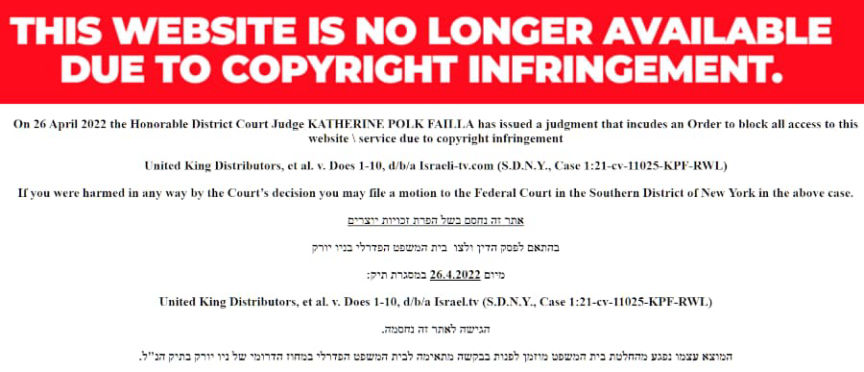
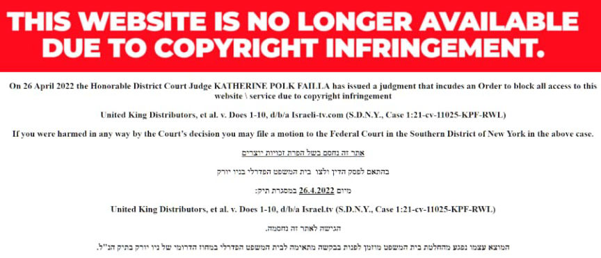

US Court Orders ISPs to Block Three Pirating Sites
A U.S. court ordered every internet service provider in the United States to block access to three pirate streaming sites.
In the Southern District of New York, a judge issued default judgments in three copyright cases against three pirate streaming services. The plaintiffs are three Jewish companies “related” to Moshe Edery, the co-founder of Screen iL: United King Film Distribution, DBS Satellite Services, and Hot Communication. The defendants are the Jewish pirate streaming services Israel-tv.com, Israel.tv, and Sdarot.tv.

The lawsuits are typical copyright cases. In short, the operators of the streaming sites violated copyright laws by hosting the plaintiff’s content.
Plaintiffs transmit their programming in an encrypted form, either as cable television transmission or via satellite transmission, and Defendants’ various services and hardware permit end-user consumers to bypass the Plaintiffs’ encryption to view Plaintiffs’ content.
Defendants have gone to great lengths to conceal themselves and their ill-gotten proceeds from Plaintiffs’ and this court’s detection, including by using multiple false identities and addresses associated with their operations and purposely-deceptive contact information for the infringing Website
However, the permanent injunctions in the judgments are the first of their kind in copyright cases. In 2011 and 2012, legislators fought over the Stop Online Piracy Act (SOPA), which included provisions for ordering ISPs to block pirate sites. Large organizations and companies, including Google and Wikipedia, protested SOPA. As a result, the House Judiciary Committee postponed the bill. As TorrentFreak pointed out, the judgment revealed that courts could already force ISPs to block access to pirating sites. Outside of the expansion of criminal law to include prison sentences for the streaming of pirated content, SOPA’s significant elements meant very little.
IT IS FURTHER ORDERED that all ISPs (including without limitation those set forth in Exhibit B hereto) and any other ISPs providing services in the United States shall block access to the Website at any domain address known today (including but not limited to those set forth in Exhibit A hereto) or to be used in the future by the Defendants (“Newly-Detected Websites”) by any technological means available on the ISPs’ systems. The domain addresses and any Newly Detected Websites shall be channeled in such a way that users will be unable to connect and/or use the Website, and will be diverted by the ISPs’ DNS servers to a landing page operated and controlled by Plaintiffs (the “Landing Page”) which can be reached as follows:
IT IS FURTHER ORDERED, that third parties providing services used in connection with Defendants’ operations – including, without limitation, ISPs, web hosting providers, CDN service providers, DNS service providers, VPN service providers, domain name purchasing service, domain names privacy service, back-end service providers, affiliate program providers, web designers, shippers, search-based online advertising services (such as through-paid inclusion, paid search results, sponsored search results, sponsored links, and Internet keyword advertising), any banks, savings and loan associations, merchant account providers, payment processors and providers, credit card associations, or other financial institutions, including without limitation, PayPal, and any other service provider which has provided services or in the future provides services to Defendants and/or the infringing Website (including without limitation those set forth in the list annexed and made Exhibit C annexed hereto) (each, a “Third Party Service Provider”) – having knowledge of this Order by service, actual notice or otherwise be and are hereby permanently enjoined from providing services to the Website (through any of the domain names set forth in Exhibit A hereto or at any Newly-Detected Websites) or to any Defendant in conjunction with any of the acts set forth in subparagraphs (A)(1) to (A)(6) above;
[list=1]*That all domain names associated with the infringing Website, including without limitation those set forth in Exhibit A hereto, as well as any Newly-Detected Websites, be transferred to Plaintiffs’ ownership and control; and[/list]
<ol start="2">*That in accordance with this court’s inherent equitable powers and its power to coerce compliance with its lawful orders, and due to Defendants’ on-going operation of their counterfeiting activities, in the event Plaintiffs identifies any Newly-Detected Website registered or operated by any Defendant and used in conjunction with the streaming any of Plaintiffs’ Works, including such Websites utilizing domain names containing any of Plaintiffs’ service mark or marks confusingly similar thereto, Plaintiffs shall have the ongoing authority to serve this Order on the domain name registries and/or the individual registrars holding and/or listing one or more of such the domain names associated with the Newly-Detected Websites; and[/list]
<ol start="3">*That the domain name registries and/or the individual registrars holding and/or listing one or more of the domain names associated with the Newly-Detected Websites, within seven (7) days of service of a copy of this Order, shall temporarily disable any domain names associated with the Newly-Detected Websites, make them inactive, and channel them in such a way that users will be unable to connect and/or use the Website, and will be diverted to the Landing Page; and[/list]
<ol start="4">*That after thirty (30) business days following the service of this Order, the registries and/or the individual registrars shall provide Plaintiffs with all contact information for the Newly-Detected Websites; shall transfer any domain names associated with the Newly-Detected Websites to the ownership and control of Plaintiffs, through the registrar of Plaintiffs’ choosing, unless the Defendant has filed with the court and served upon Plaintiffs’ counsel a request that such Newly-Detected Websites be exempted from this Order or unless Plaintiffs requests that such domain names associated with the NewlyDetected Websites be released rather than transferred; and[/list]
<ol start="5">*That any Defendant may upon two (2) business days’ written notice to the Court and Plaintiffs’ counsel, upon proper showing, appear and move for the dissolution or modification of the provisions of this Order concerning the restriction upon transfer of such domain names associated with the Newly-Detected Websites belonging to or controlled by any Defendant[/list]

A Jew-vs-Jew copyright battle is undoubtedly the least of an average person’s concerns. The ruling by the court, which is unprecedented, introduces a new form of control over internet infrastructure, including ISPs, by the U.S. government.
TorrentFreak concluded:
“Whether every (or any) ISP in the United States will contest the injunction is currently unknown, but we can be fairly confident that if they choose not to, these three site-blocking injunctions won’t be the last in the United States.”
I have included the judgement against Israel-TV. The other judgement are not materially different.
DEFAULT JUDGMENT AND PERMANENT INJUNCTION ORDER pdf
[em]US Court Orders Every ISP in the United States to Block Illegal Streaming Sites[/em] archive.is archive.org torrentfreak.com
In the Southern District of New York, a judge issued default judgments in three copyright cases against three pirate streaming services. The plaintiffs are three Jewish companies “related” to Moshe Edery, the co-founder of Screen iL: United King Film Distribution, DBS Satellite Services, and Hot Communication. The defendants are the Jewish pirate streaming services Israel-tv.com, Israel.tv, and Sdarot.tv.
Sdarot.tv is apparently a top streaming site in Israel.
The lawsuits are typical copyright cases. In short, the operators of the streaming sites violated copyright laws by hosting the plaintiff’s content.
Plaintiffs transmit their programming in an encrypted form, either as cable television transmission or via satellite transmission, and Defendants’ various services and hardware permit end-user consumers to bypass the Plaintiffs’ encryption to view Plaintiffs’ content.
Defendants have gone to great lengths to conceal themselves and their ill-gotten proceeds from Plaintiffs’ and this court’s detection, including by using multiple false identities and addresses associated with their operations and purposely-deceptive contact information for the infringing Website
However, the permanent injunctions in the judgments are the first of their kind in copyright cases. In 2011 and 2012, legislators fought over the Stop Online Piracy Act (SOPA), which included provisions for ordering ISPs to block pirate sites. Large organizations and companies, including Google and Wikipedia, protested SOPA. As a result, the House Judiciary Committee postponed the bill. As TorrentFreak pointed out, the judgment revealed that courts could already force ISPs to block access to pirating sites. Outside of the expansion of criminal law to include prison sentences for the streaming of pirated content, SOPA’s significant elements meant very little.
IT IS FURTHER ORDERED that all ISPs (including without limitation those set forth in Exhibit B hereto) and any other ISPs providing services in the United States shall block access to the Website at any domain address known today (including but not limited to those set forth in Exhibit A hereto) or to be used in the future by the Defendants (“Newly-Detected Websites”) by any technological means available on the ISPs’ systems. The domain addresses and any Newly Detected Websites shall be channeled in such a way that users will be unable to connect and/or use the Website, and will be diverted by the ISPs’ DNS servers to a landing page operated and controlled by Plaintiffs (the “Landing Page”) which can be reached as follows:
The landing page already exists.
IT IS FURTHER ORDERED, that third parties providing services used in connection with Defendants’ operations – including, without limitation, ISPs, web hosting providers, CDN service providers, DNS service providers, VPN service providers, domain name purchasing service, domain names privacy service, back-end service providers, affiliate program providers, web designers, shippers, search-based online advertising services (such as through-paid inclusion, paid search results, sponsored search results, sponsored links, and Internet keyword advertising), any banks, savings and loan associations, merchant account providers, payment processors and providers, credit card associations, or other financial institutions, including without limitation, PayPal, and any other service provider which has provided services or in the future provides services to Defendants and/or the infringing Website (including without limitation those set forth in the list annexed and made Exhibit C annexed hereto) (each, a “Third Party Service Provider”) – having knowledge of this Order by service, actual notice or otherwise be and are hereby permanently enjoined from providing services to the Website (through any of the domain names set forth in Exhibit A hereto or at any Newly-Detected Websites) or to any Defendant in conjunction with any of the acts set forth in subparagraphs (A)(1) to (A)(6) above;
[list=1]*That all domain names associated with the infringing Website, including without limitation those set forth in Exhibit A hereto, as well as any Newly-Detected Websites, be transferred to Plaintiffs’ ownership and control; and[/list]
<ol start="2">*That in accordance with this court’s inherent equitable powers and its power to coerce compliance with its lawful orders, and due to Defendants’ on-going operation of their counterfeiting activities, in the event Plaintiffs identifies any Newly-Detected Website registered or operated by any Defendant and used in conjunction with the streaming any of Plaintiffs’ Works, including such Websites utilizing domain names containing any of Plaintiffs’ service mark or marks confusingly similar thereto, Plaintiffs shall have the ongoing authority to serve this Order on the domain name registries and/or the individual registrars holding and/or listing one or more of such the domain names associated with the Newly-Detected Websites; and[/list]
<ol start="3">*That the domain name registries and/or the individual registrars holding and/or listing one or more of the domain names associated with the Newly-Detected Websites, within seven (7) days of service of a copy of this Order, shall temporarily disable any domain names associated with the Newly-Detected Websites, make them inactive, and channel them in such a way that users will be unable to connect and/or use the Website, and will be diverted to the Landing Page; and[/list]
<ol start="4">*That after thirty (30) business days following the service of this Order, the registries and/or the individual registrars shall provide Plaintiffs with all contact information for the Newly-Detected Websites; shall transfer any domain names associated with the Newly-Detected Websites to the ownership and control of Plaintiffs, through the registrar of Plaintiffs’ choosing, unless the Defendant has filed with the court and served upon Plaintiffs’ counsel a request that such Newly-Detected Websites be exempted from this Order or unless Plaintiffs requests that such domain names associated with the NewlyDetected Websites be released rather than transferred; and[/list]
<ol start="5">*That any Defendant may upon two (2) business days’ written notice to the Court and Plaintiffs’ counsel, upon proper showing, appear and move for the dissolution or modification of the provisions of this Order concerning the restriction upon transfer of such domain names associated with the Newly-Detected Websites belonging to or controlled by any Defendant[/list]

Shut it down! - the landing page for the pirate streaming sites
A Jew-vs-Jew copyright battle is undoubtedly the least of an average person’s concerns. The ruling by the court, which is unprecedented, introduces a new form of control over internet infrastructure, including ISPs, by the U.S. government.
TorrentFreak concluded:
“Whether every (or any) ISP in the United States will contest the injunction is currently unknown, but we can be fairly confident that if they choose not to, these three site-blocking injunctions won’t be the last in the United States.”
I have included the judgement against Israel-TV. The other judgement are not materially different.
DEFAULT JUDGMENT AND PERMANENT INJUNCTION ORDER pdf
[em]US Court Orders Every ISP in the United States to Block Illegal Streaming Sites[/em] archive.is archive.org torrentfreak.com
Somebody will claim that I am lionizing streaming sites or care about copyright laws. I do not care about either of those things.